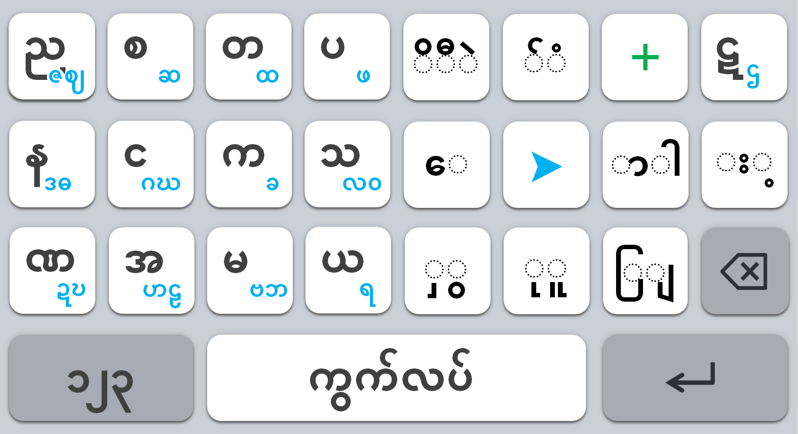
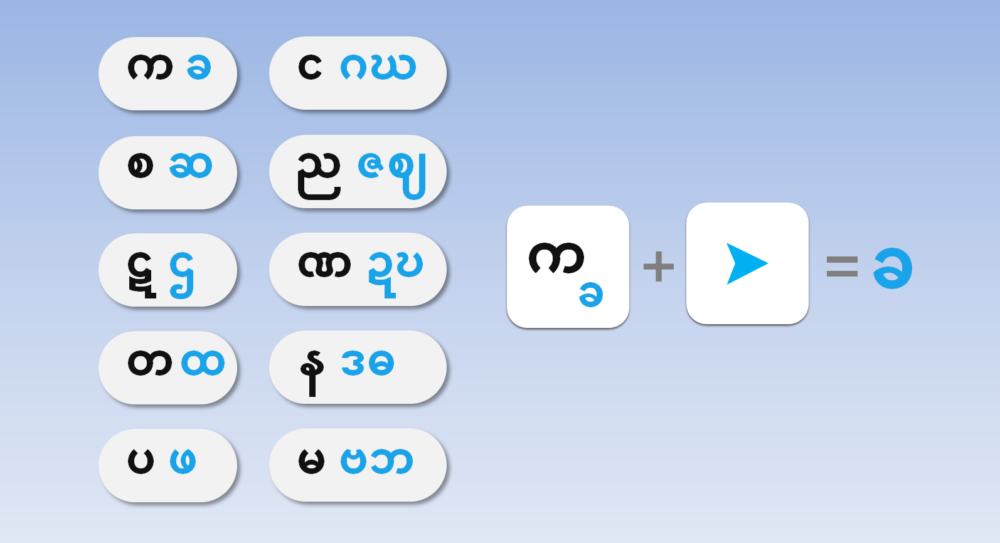
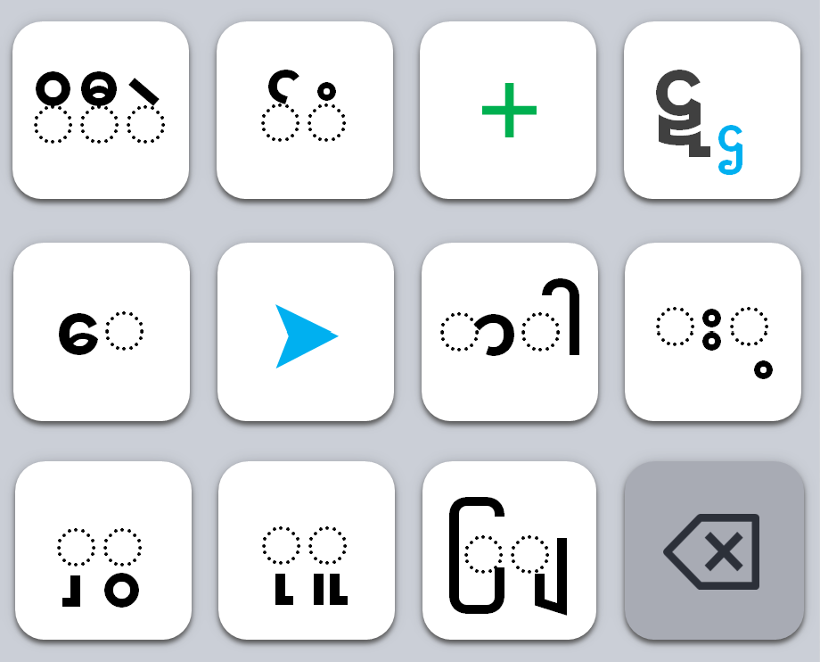
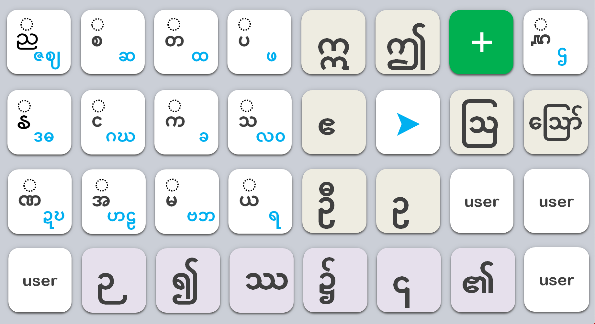
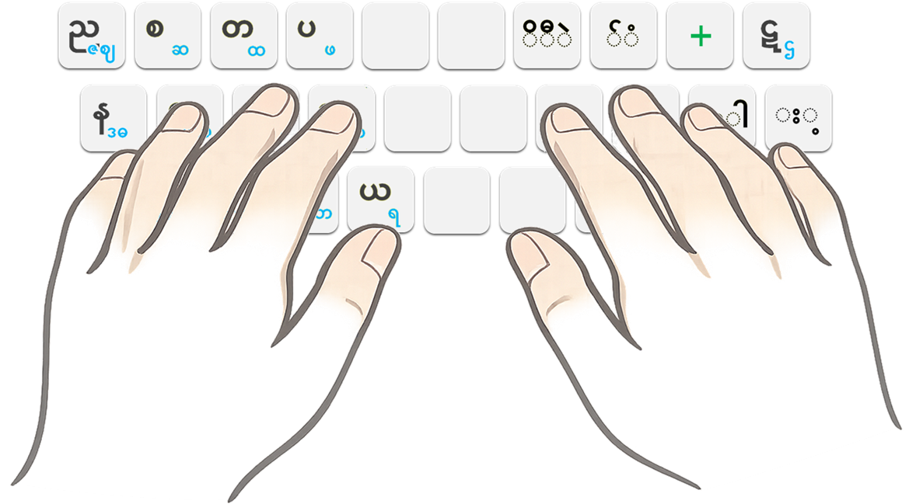

ကျွန်ုပ်တို့သည် နငကသ မျိုးဆက်ဖြစ်သည်
ဗမာစာကီးဘုတ်တော်လှန်ရေး
Nangkatha




အခြေခံဗျည်းနှင့် သရများမှလွဲ၍ ကျန်ရှိသော ခလုတ်များကို [+] ခလုတ်တွင် စုစည်းထားပါသည်။
ညာဘက်အပေါ်ထောင့်ရှိ [+] ခလုတ်ကို နှိပ်ပါ။
နငကသကို တစ်ရက်တည်း လေ့ကျင့်ရုံဖြင့် မကြည့်ဘဲ ရိုက်နိုင်သောကြောင့်၊ ရှိပြီးသား ကီးဘုတ်ပေါ်တွင်လည်း အခက်အခဲမရှိ ရိုက်နှိပ်နိုင်ပါသည်။

စမ်းသုံးကြည့်ပြီးသော သူများ၏ ထင်မြင်ချက်များကို ဖတ်ကြည့်ပါ။ သင်လည်း မျှဝေနိုင်ပါသည်။
💬 သုံးသပ်ချက်များ ကြည့်ရန်